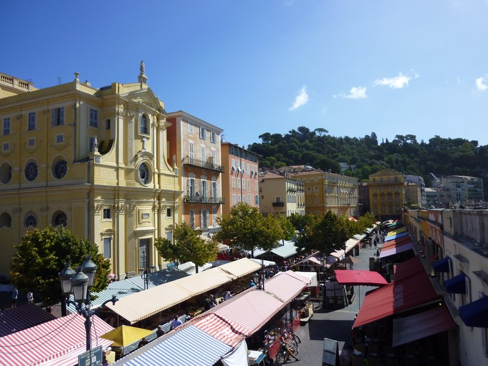
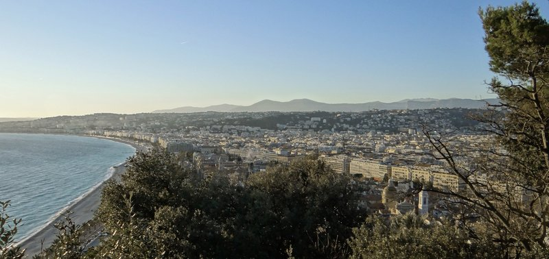
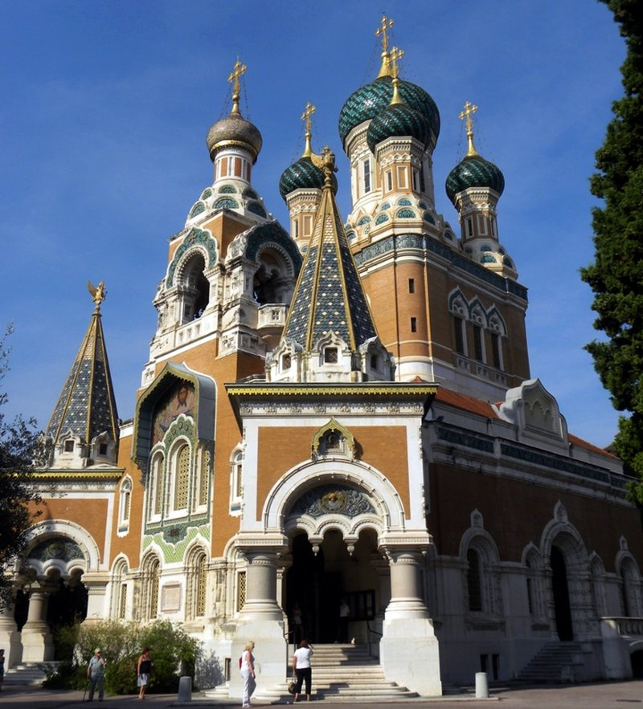
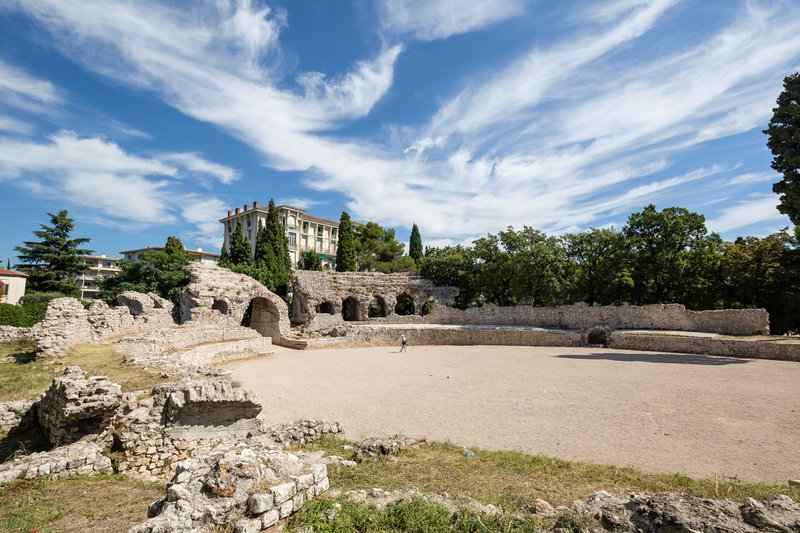
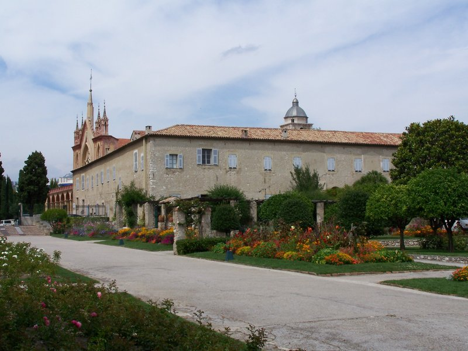

TRIP OVERVIEW
Day 1 – Promenade des Anglais · Place Masséna · Vieux Nice · Colline du Château
Day 2 – Cathédrale Saint-Nicolas · Arènes de Cimiez · Jardins du Monastère de Cimiez
Day 1
🏨 From Hotel: 🚶 8 min · 🚕 5 min → Promenade des Anglais
1. Promenade des Anglais
↳ The grand seafront boulevard that defines Nice — a palm-lined walkway above the pebble beaches of the Baie des Anges, laid out by the city's English winter residents in the 1820s. Belle Époque facades, the famous blue chairs, joggers and strollers make it the city's open-air living room.

🚶 6 min · 🚕 4 min → Place Masséna
2. Place Masséna
↳ Nice's monumental main square, its red-ochre arcaded Italianate facades framing a vast checkerboard of paving. Built over the buried Paillon river, it links the Old Town with the new; the Fontaine du Soleil and Jaume Plensa's glowing statues crown it.

🚶 5 min · 🚕 4 min → Vieux Nice
3. Vieux Nice
↳ The old town is a sun-baked maze of ochre alleys, baroque churches and shuttered tenements hung with laundry, opening onto the Cours Saleya — the famous flower-and-produce market square. This is the soul of Nice: socca stalls, gelato counters and Niçois life in every doorway.

🚶 6 min · 🚕 4 min → Colline du Château
4. Colline du Château
↳ A wooded promontory rising 90 m above the sea between the Old Town and the port. The castle that named it was razed in 1706, but the park that replaced it offers the best panorama in Nice — the whole curve of the Baie des Anges on one side, the harbour on the other.

🚶 7 min · 🚕 4 min → hotel
Day 2
🏨 From Hotel: 🚕 12 min → Cathédrale Saint-Nicolas
1. Cathédrale Saint-Nicolas
↳ The largest Russian Orthodox cathedral in Western Europe, built 1903–1912 for Nice's imperial-era Russian colony and consecrated under Tsar Nicholas II. Six onion domes rise improbably from a quiet residential street — a startling slice of Moscow on the Riviera.

🚕 9 min → Arènes de Cimiez
2. Arènes de Cimiez
↳ The remains of Cemenelum, the Roman town that crowned Cimiez as capital of the province Alpes Maritimae. A compact 2nd-century amphitheatre that held 5,000 spectators sits in an olive-grove park beside the excavated baths — green, free and rarely crowded.

🚶 4 min · 🚕 3 min → Jardins du Monastère de Cimiez
3. Jardins du Monastère de Cimiez
↳ A serene terraced garden behind the Franciscan monastery atop Cimiez, kept to its 1546 layout with clipped hedges, a central well, pergolas and one of the Riviera's loveliest rose gardens. The balustrade view sweeps over the whole city to the sea.

🚕 13 min → hotel
🗓️ Weekly Closures
Cours Saleya Market · Closed Monday
Municipal Museums · Closed Tuesday
Old-Town Bistros · Closed Sunday
📅 Tours
Viator
↳ Nice's top-rated walk: the Old Town lanes, Cours Saleya and baroque churches, then up to Castle Hill for the panorama — with a taste of homemade pissaladière along the way.
🕐 10:00am · ⏳ 2 hr 15 min · 👥 Small group
🚶 12 min · 🚕 5 min
↳ A full-day minivan run along the coast — Eze, Monaco and Monte-Carlo, Saint-Paul-de-Vence, Cannes and Antibes — with a local guide and time to wander each village.
🕐 8:00am · ⏳ 10 hr · 👥 Max 8
🏨 ↔ 🚐
↳ A guided coastal day trip taking in the headline Riviera towns and viewpoints along the coast to the Italian border, with photo stops and free time in each.
🕐 8:30am · ⏳ 9 hr · 👥 Small group
🏨 ↔ 🚐
↳ A small-group Riviera explorer with an extended itinerary through Antibes, Eze, Saint-Paul-de-Vence and Villefranche-sur-Mer aboard a comfortable minivan.
🕐 8:30am · ⏳ 9 hr · 👥 Max 8
🏨 ↔ 🚐
GetYourGuide
↳ A storytelling walk through the medieval Old Town with a local guide — hidden corners, the city's Greek-to-Italian history, and tips on where to eat like a Niçois.
🕐 10:00am · ⏳ 2 hr · 👥 Small group
🚶 6 min · 🚕 4 min
TripAdvisor
📅 1. Nice Small-Group Old Town & Castle Hill Cultural Walking Tour · TripAdvisor · 4.8⭐ · 42+ reviews
↳ A small-group walk through Vieux Nice with a local guide, threading the secret corners of the Old Town up to Castle Hill, ending with a taste of a local specialty.
🕐 10:00am · ⏳ 2 hr · 👥 Small group
🚶 6 min · 🚕 4 min
↳ A full-day small-group run along the coast taking in the headline Riviera towns and villages, with a local guide and time to wander each stop.
🕐 8:00am · ⏳ 9 hr · 👥 Small group
🏨 ↔ 🚐
↳ A seven-hour shared excursion east along the Corniche — the cliff-top village of Èze, the Roman trophy at La Turbie, and the glamour of Monaco and Monte-Carlo.
🕐 8:30am · ⏳ 7 hr · 👥 Small group
🏨 ↔ 🚐
↳ A full-day small-group loop west to the film-festival glamour of Cannes, the ramparts of Antibes, and the medieval art village of Saint-Paul-de-Vence.
🕐 8:30am · ⏳ 9 hr · 👥 Small group
🏨 ↔ 🚐
☕ Cappuccino
Les Distilleries Idéales · 4.5⭐ · 428+ reviews
Brume Coffee · 4.9⭐ · 90+ reviews
🏛️ Wednesday - Sunday 10:00am - 6:00pm
🚫 Closed Monday & Tuesday
🚶 9 min · 🚕 5 min
🫕 Restaurants Near Hotel
La Favola · 4.4⭐ · 130+ reviews
↳ Generous Italian classics on a Cours Saleya terrace.
🏛️ Daily 12:00pm - 11:00pm
🚶 5 min · 🚕 4 min
Le Bistrot d'Antoine · 4.4⭐ · 90+ reviews
↳ Michelin Bib Gourmand bistro — French classics, great value.
🏛️ Tuesday - Saturday 12:00pm - 2:00pm · 7:00pm - 10:00pm
🚫 Closed Sunday & Monday
🚶 7 min · 🚕 4 min
Oliviera · 4.6⭐ · 80+ reviews
↳ Olive-oil-led Mediterranean lunch from a passionate owner.
🏛️ Tuesday - Saturday 12:00pm - 2:30pm
🚫 Closed Sunday & Monday
🚶 8 min · 🚕 5 min
L'Escalinada · 4.3⭐ · 376+ reviews
↳ Classic Niçoise cooking under exposed beams in an Old-Town alley.
🏛️ Daily 12:00pm - 2:30pm · 7:00pm - 11:00pm
🚶 9 min · 🚕 5 min
Lou Balico · 4.1⭐ · 552+ reviews
↳ Family institution for traditional Niçois cooking, facing the theatre.
🏛️ Daily 11:00am - 2:30pm · 7:00pm - 11:00pm
🚶 14 min · 🚕 6 min
🍽️ Downtown Restaurants
Chez Palmyre · 4.6⭐ · 89+ reviews
↳ 1926 institution serving a fixed three-course Niçois menu.
🏛️ Monday - Friday 12:00pm - 1:30pm · 7:30pm - 9:30pm
🚫 Closed Saturday & Sunday
Chez Acchiardo · 4.5⭐ · 109+ reviews
↳ Four-generation family trattoria with homemade pasta and Niçois daube.
🏛️ Monday - Friday 12:00pm - 2:00pm · 7:00pm - 10:00pm
🚫 Closed Saturday & Sunday
Chez Pipo · 4.5⭐ · 187+ reviews
↳ The city's socca temple near the port, serving since the 1920s.
🏛️ Wednesday - Sunday 11:30am - 2:30pm · 5:30pm - 10:00pm
🚫 Closed Monday & Tuesday
🍮 Local Tastes
Socca
↳ A chickpea-flour pancake baked in a wood-fired oven, crisp at the edges and soft inside, eaten piping hot with a grind of black pepper. Genoese in origin, it is Nice's defining street snack.
Pissaladière
↳ A savoury tart on a bread base smothered in slow-caramelised onions, anchovies and small black Niçoise olives — robust, salty and unmistakably southern.
Salade Niçoise
↳ The original: tomatoes, egg, anchovies or tuna, raw vegetables and olives dressed in olive oil — no potatoes or green beans in the purist Niçois version.
Pan Bagnat
↳ A salade niçoise packed into a round roll rubbed with garlic and soaked in olive oil — the Riviera's "bathed bread" and perfect beach lunch.
Petits Farcis
↳ Small vegetables — courgette, onion, tomato, pepper — hollowed out, stuffed with seasoned meat and breadcrumbs, and baked until golden.
🎭 Shows, Performances & Concerts
Opéra de Nice
↳ The city's 1885 opera house in the Old Town — opera, ballet and symphonic concerts in a gilded Belle Époque hall.
🚶 7 min · 🚕 4 min
🚌 Getting Around
🚕 Uber
🚕 Bolt
🚎 Tram
↳ Lignes d'Azur runs trams across central Nice, with line T1 crossing Place Masséna.
Nice has a tram system — operated by Lignes d'Azur. No tram rides on this trip.
🚆 Train Stations Near Hotel
🚊 Gare de Nice-Ville
Mainline TER, Intercités and TGV trains to Monaco, Cannes, Marseille and Paris.
🚶 28 min · 🚕 9 min
🚊 Gare de Nice Riquier
⛲️ Day Trips by Train
Villefranche-sur-Mer · 8 min
↳ A pastel fishing harbour wrapped around a deep blue bay, one stop east, with a baroque old town and the Cocteau-painted Chapelle Saint-Pierre on the quay.
🎫 book at: SNCF Connect or Omio
Monaco & Monte-Carlo · 20 min
↳ The glittering principality 20 minutes east — the Casino de Monte-Carlo, the Prince's Palace, the old town of Monaco-Ville and the Oceanographic Museum, all walkable once you arrive.
🎫 book at: SNCF Connect or Omio
Antibes · 20 min
↳ A walled seaside town 20 minutes west with a ramparts walk, the Picasso Museum in the Château Grimaldi, and Europe's largest yacht harbour at Port Vauban.
🎫 book at: SNCF Connect or Omio
Menton · 30 min
↳ The "pearl of France" on the Italian border — a lemon-scented town of ochre houses, terraced gardens and a steep baroque old town, 30 minutes east.
🎫 book at: SNCF Connect or Omio
Cannes · 40 min
↳ Riviera glamour 40 minutes west — La Croisette, the film-festival Palais, the sandy beaches and the old quarter of Le Suquet climbing above the port.
🎫 book at: SNCF Connect or Omio
⭐ Michelin Restaurants
⭐⭐ Flaveur
↳ Inventive modern Riviera cuisine with Caribbean and Asian accents.
🚶 17 min · 🚕 7 min
⭐ Le Chantecler
↳ Grand seafront fine dining inside the Belle Époque Hôtel Negresco.
🚶 24 min · 🚕 5 min
⭐ Pure & V
↳ Market-driven, seasonal bistronomic cooking in a relaxed room.
🚶 32 min · 🚕 8 min
⭐ JAN
❗️ Heads Up
❗️ Cours Saleya — Market vs. Antiques
↳ The Cours Saleya market runs Tuesday to Sunday mornings; on Monday it is antiques only, no flowers or food.
Workaround: Visit the food market any morning except Monday.
❗️ Cimiez — Museums Closed Tuesdays
↳ Nice's municipal museums, including those at Cimiez, close on Tuesday; the Roman ruins and monastery gardens stay open.
Workaround: Save museum visits for another day; do gardens and ruins on Tuesday.
❗️ Castle Hill — It's a Climb
↳ The climb from the Old Town is steep, but a free lift runs by the Bellanda Tower at the east end of Quai des États-Unis.
Workaround: Take the free lift up and walk the gentle paths down.
✨ A Note on Nice
Nice rewards the slow traveller. Two days is just enough to learn its rhythm: mornings belong to the Cours Saleya, when the flower sellers are setting up and the socca ovens are warming; afternoons to the shade of Castle Hill or the long blue line of the Promenade; evenings to a small table in the Old Town with a carafe of rosé and a plate of petits farcis.
Resist the urge to museum-hop. The art of Nice is mostly outdoors — in the ochre walls, the light coming off the bay, the cathedrals you stumble into, the way the hills of Cimiez go quiet and Roman the moment you step off the bus. Walk first, plan second, and let the city set the pace.